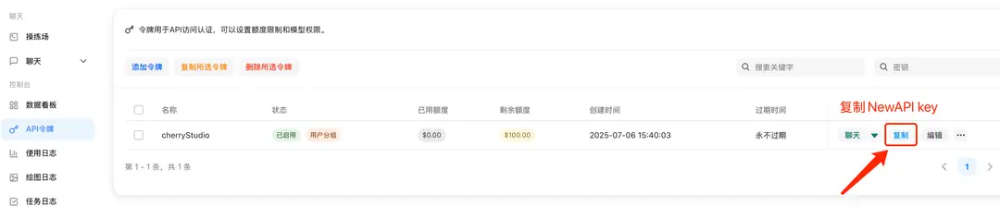
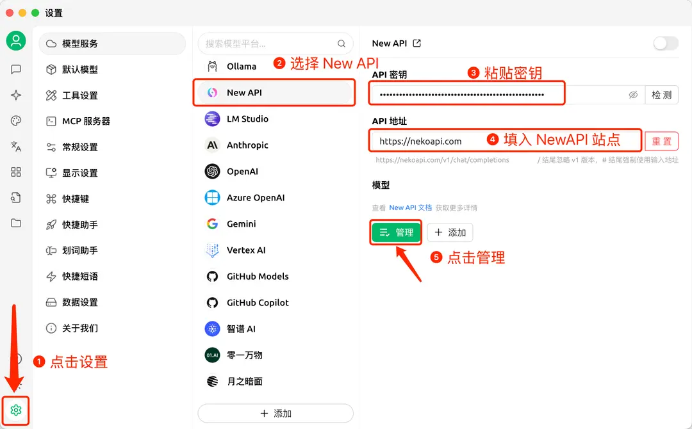
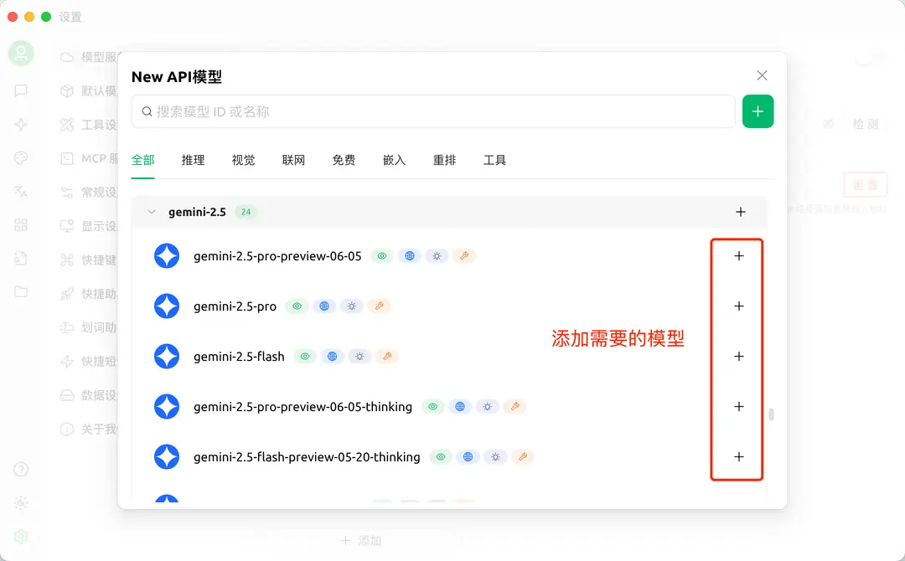
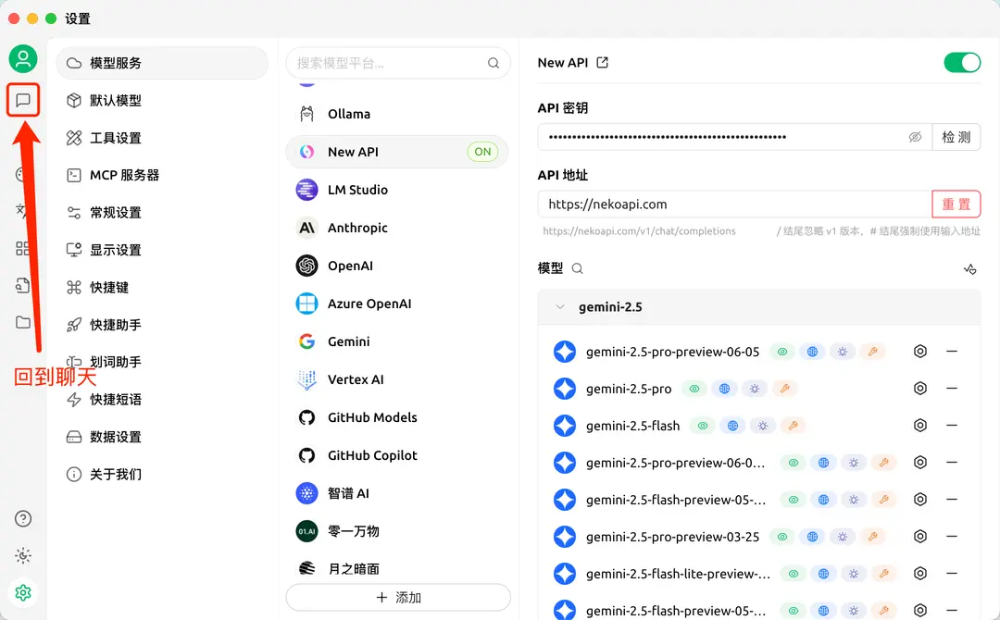
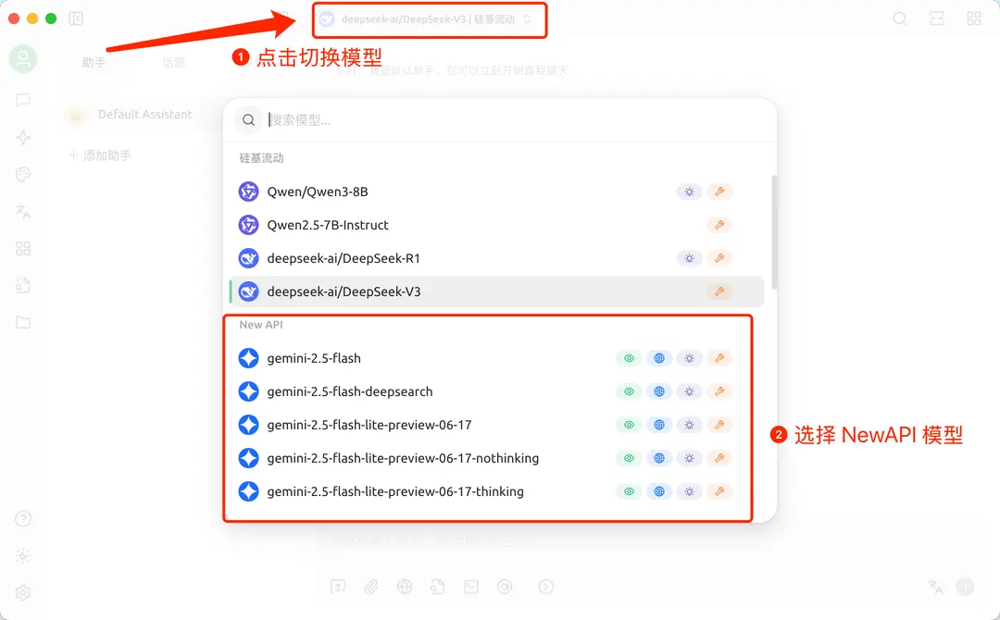
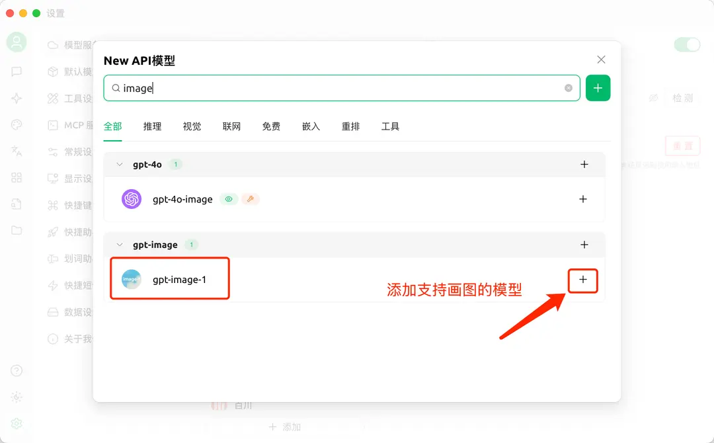
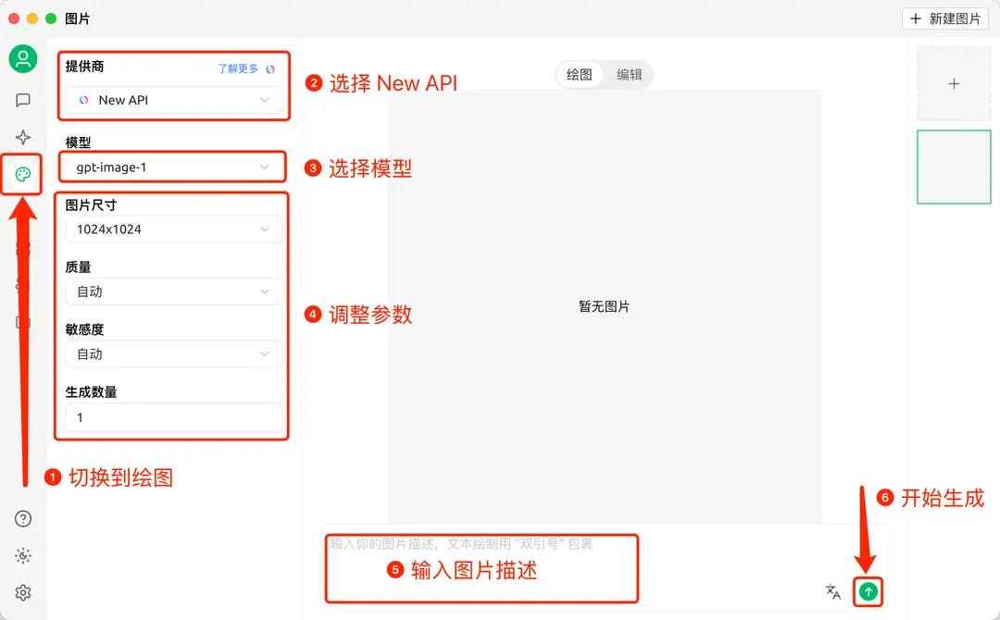

桌面
Cherry Studio 接入教程
完整复刻源站 Cherry Studio 教程密度：参数填写、图文指引、聊天模型和绘图模型配置。
桌面端多助手NewAPI
项目介绍
🍒 Cherry Studio 是一款功能强大的桌面 AI 客户端，专为专业用户设计，集成了 30+ 行业智能助手，能够满足各种工作场景的需求，显著提升工作效率。
词元.fast API 接入方法
参数填写
提供商类型：词元.fast API 支持的类型 API 密钥：于 词元.fast API 获取 API 地址：https://ciyuan.fast
图文指引
1. 在 词元.fast API 中复制 API key

2. 添加提供商

3. 添加模型

4. 返回聊天页面

5. 切换 词元.fast API 模型

在 Cherry Studio 中画图
1. 首先添加支持画图的模型

2. 画图
